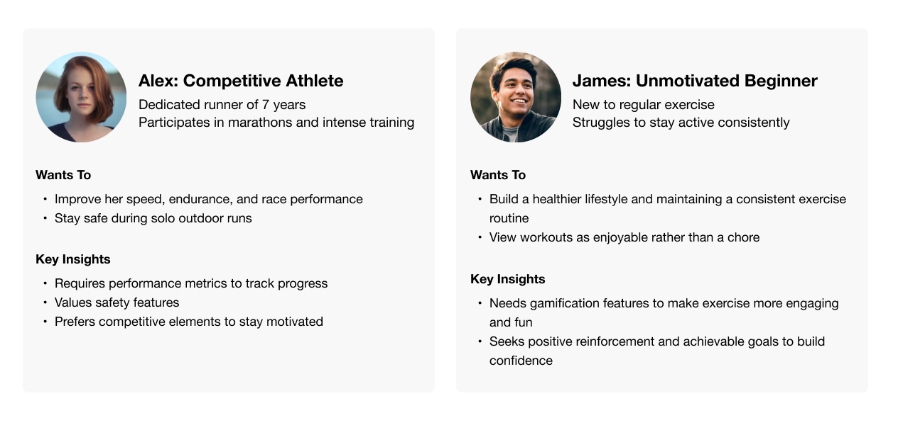

BeeFitter
Creating Safe and Immersive Workout Experiences with AR in Fitness Apps
My roles
User Research, User Experience Design, Prototype & Usability Testing
Timeline & Team
8 weeks start to finish with other 3 master’s students, and I was chosen to be the team leader.
Processs
I led this 8-week project from research through high-fidelity prototype, including defining the problem, developing personas and user journeys, creating prototypes in Figma, conducting usability testing, and iterating the design based on feedback.
Discovery
Many people struggle to start exercising and stick with it, often lacking motivation and joy. I also found an online survey that showed:
Market Research + Competitive Analysis
The fitness app market is oversaturated, with over 97,000 fitness and health apps available.
Personas
To better understand our userss’ goals and behaviors, we interviewed active fitness enthusiasts and individuals looking to start working out. Based on these insights, we created two personas:

Journey Maps
Since these two personas have unique needs, I created detailed journey maps. For athletes like Alex, we focused on competitive and motivating features, while for beginners like James, we emphasized a gamified experience with an emergency beacon for reassurance.
Ideation
We began brainstorming the app design. Since the help beacon and gamified AR features are key value propositions. We focused on two main flows:
Mid-fidelity Prototype
One of the flows, a trophy-hunting journey, was designed for James with fun as the priority, offering an engaging way to keep him motivated and committed to fitness.